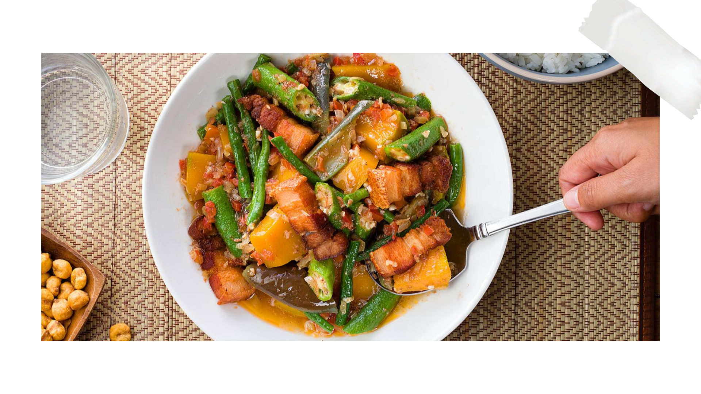
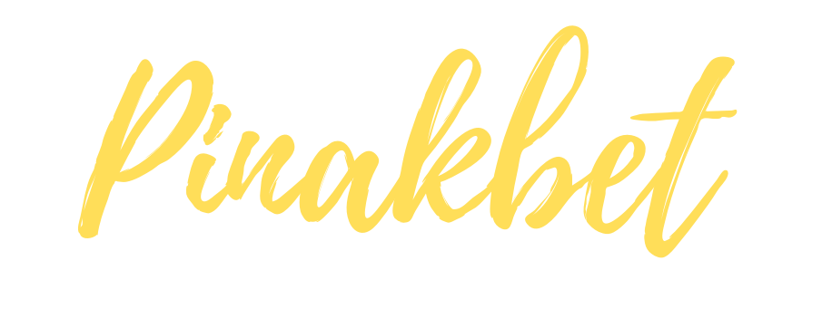
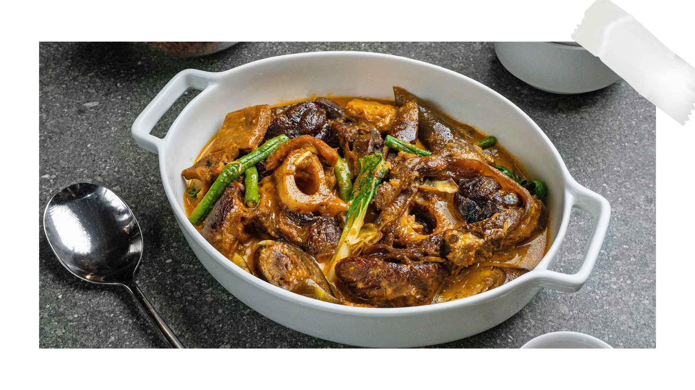

What Cocina Vasca aims to do is not only serve you traditional Filipino food but also bring you back in time with its antique-decorated ambience. The no-frills approach and dedication to achieving a “malinamnam” flavor is what has kept the restaurant well-established since 2017. Dig into their knockout kare-kare, which makes use of crispy pata to complement the thick peanut sauce. And there’s a whole range of healthy options, like the gising gising, tortang talong and adobong puso ng saging.
Among its specialties are Binukadkad na pla-pla, Gising-gising, Piniritong Galunggong, Crispy Tadyang and Sinigang sa Bayabas. If you are looking to eat authentic filipino cuisine, then this is the right place.

A mélange of fresh vegetables sautéed with pork, shrimp and shrimp paste. A popular dish originally from the Northern llocos region, prepared the Cocina Vasca's way.


Our Kare-Kare has that distinct and perfectly balanced sweetness made from our very own Caramel Butter. This compliments the beef flavor really well. Every spoonfull is an absolute treat!